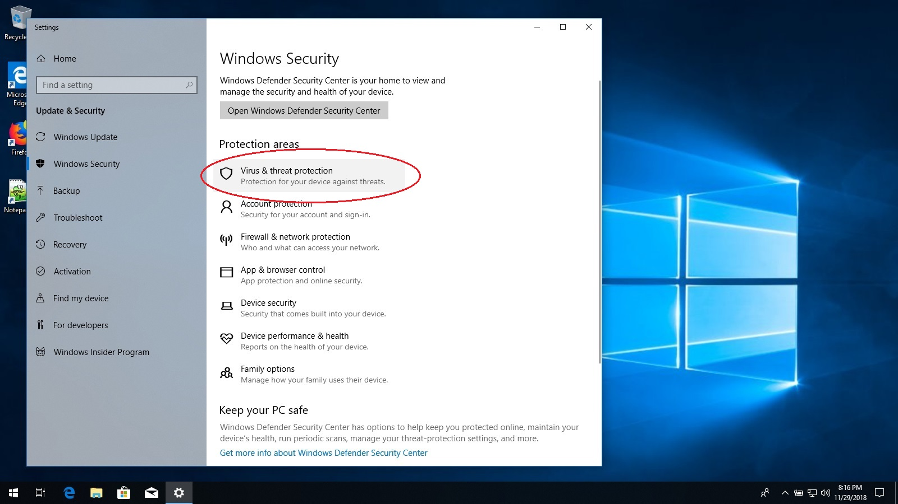
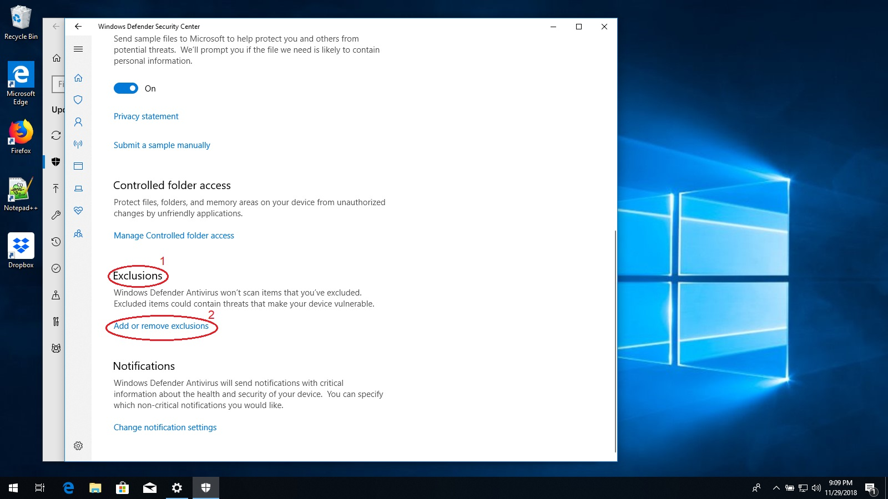
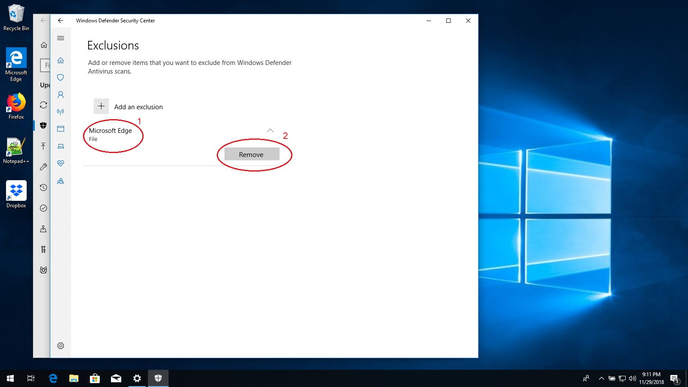

Removing Exclusions from Windows Defender
Windows Defender is a security program that is included for free with Windows. It detects and removes viruses from
your computer, but some viruses can "exclude" themselves and avoid Windows Defender's security scans. Some excluded
files were found on your computer. These files could be used by a virus to hide from your computer's security
programs. To fix this, follow the steps below.
-
First, click on the start button and then the settings gear.

-
When the Settings app opens, click on the "Search" box at the top and type in "defender".
-
Below the search box, the words "Windows Defender Settings" will appear. Click these words.

-
Look for and click on the words "Virus and threat protection" next to a picture of a shield.

-
A new window will open with the title "Windows Defender Security Console".
Click on the words "Virus & threat protection settings".

-
Scroll down until you find the text "Exclusions".
-
Click on the blue text that says "Add or remove exclusions".

-
You will see the text "Add an exclusions" above a list of file names.
-
Click the first item in the list to reveal a button with the caption "Remove".
-
Click on the "Remove" button.

-
You may see a message that says "Do you want to allow this app to make changes to your device?". If this
message appears, then press "Yes". If it does not appear, then skip this step.
-
Repeat the previous three steps until there are no more files listed under "Add an exclusion".

-
Close the "Windows Defender Security Console" and the Settings app.
Congratulations, Windows Defender is now protecting your computer!